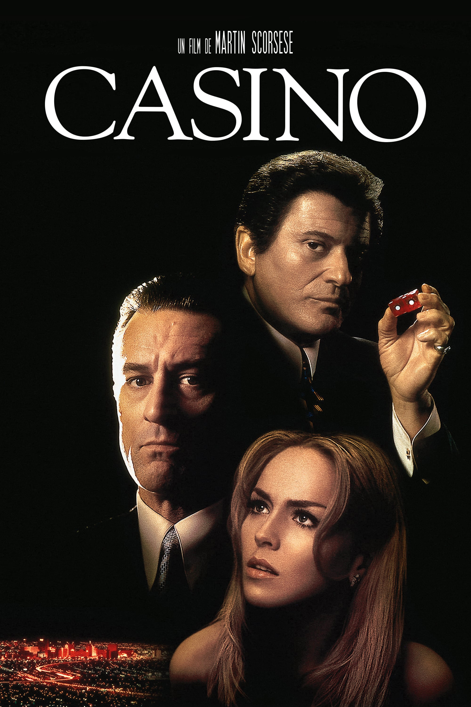
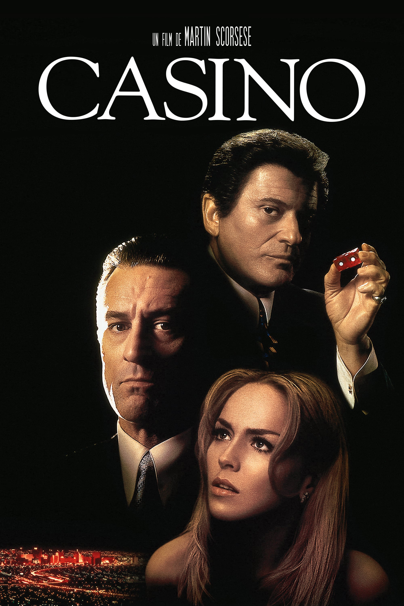

Mon portfolio

 

Magnolia
de Paul Thomas Anderson, sorti en 1999
The Dark Knight, Le Chevalier Noir
de Christopher Nolan, sorti en 2008
Casino
de Martin Scorsese, sorti en 1995
Bioshock:
BioShock est un jeu vidéo de tir en vue à la première personne sorti en 2007, le jeu prend place en 1960. Le personnage incarné par le joueur, nommé Jack, survivant d'un accident aérien en pleine mer, découvre la ville sous-marine de Rapture, une ville construite par un mégalomane milliardaire, Andrew Ryan, au lendemain de la Seconde Guerre mondiale afin d'y réaliser ses rêves les plus fous d'une société utopique, loin de toute morale extérieure. L'ambiance est principalement art déco avec une forte inspiration steampunk et dieselpunk.
Firewatch:
Firewatch est un jeu vidéo de type walking simulator sorti en 2016, Vous incarnez Henry en 1989, qui, tourmenté par son passé, décide du jour au lendemain de surveiller des feux de forêts dans les étendues sauvages de l'État du Wyoming. Son seul contact avec le monde extérieur est sa superviseure, une femme nommée Delilah. Mais un jour, un événement étrange tire Henry de sa tour de surveillance et l'oblige à la quitter pour rejoindre cet environnement inconnu, où il devra progresser dans la narration qui pourrait l'amener à construire ou détruire la seule véritable relation humaine qu'il ait réussi à forger.
Fable III:
Fable III est un jeu vidéo de type action-RPG, sorti en 2010 Fable III prend place cinquante ans après les évènements de Fable 2. Le héros du dernier jeu serait devenu roi, léguant, après sa mort, le trône à son fils aîné, Logan. Mais celui-ci règne en tyran. Le personnage principal est le fils cadet du héros de Fable 2 et a pour mission de mettre fin au règne de Logan. Durant la première partie du jeu, le héros doit renverser le tyran pour devenir le roi de l'Albion. Dans la seconde partie, le héros peut expérimenter le pouvoir et prendre des décisions qui auront un grand impact sur l'Albion.
Minecraft:
Minecraft est un jeu vidéo de type aventure « bac à sable » Minecraft plonge le joueur dans un monde créé de manière procédurale, composé de cubes représentant différents matériaux comme de la terre, du sable, de la pierre, de l'eau, ou des minerais formant diverses structures. Le monde est également habité par des animaux ou monstres. Le joueur peut modifier cet ensemble à volonté en y ajoutant ou supprimant des blocs et en tentant de survivre le plus longtemps possible, ces possibilités lui permettant ainsi de bâtir des constructions avec une grande liberté.